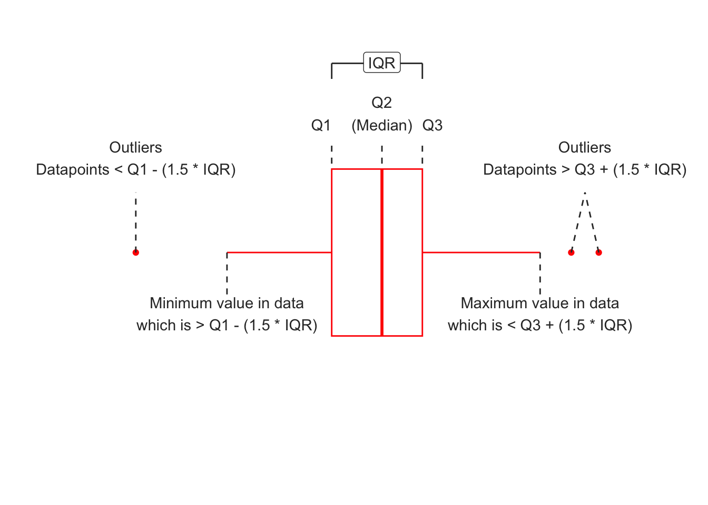
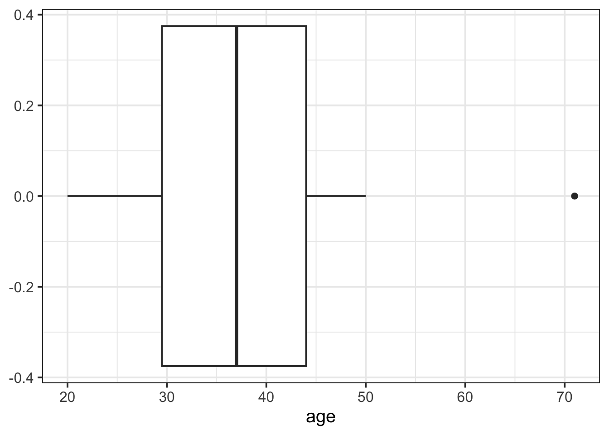
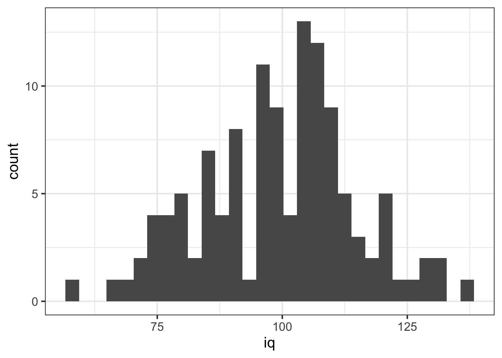
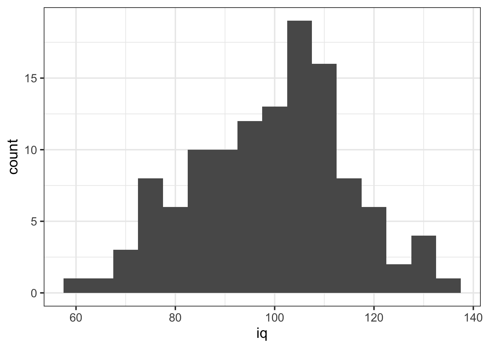
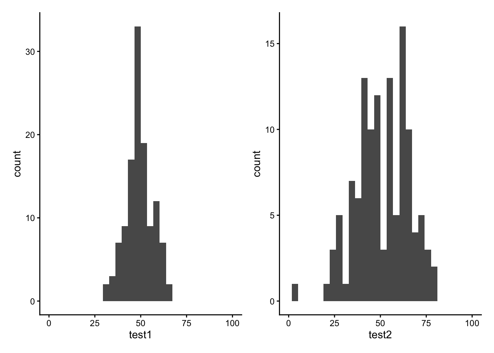
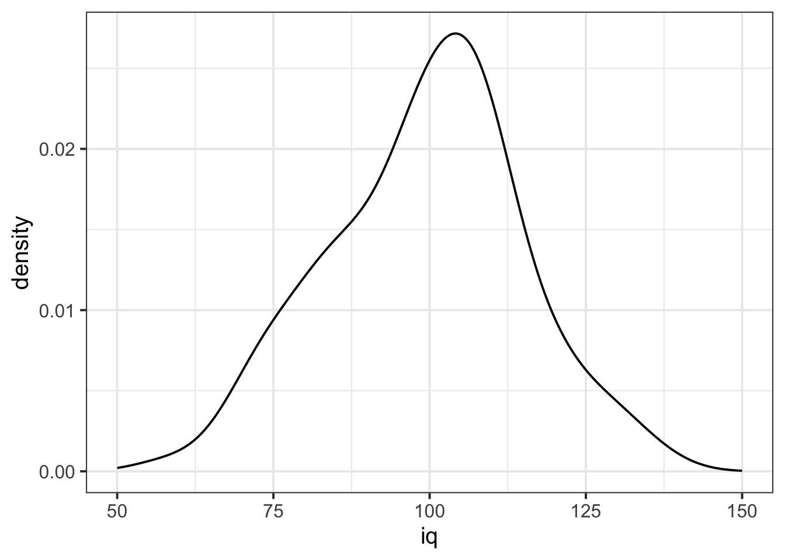
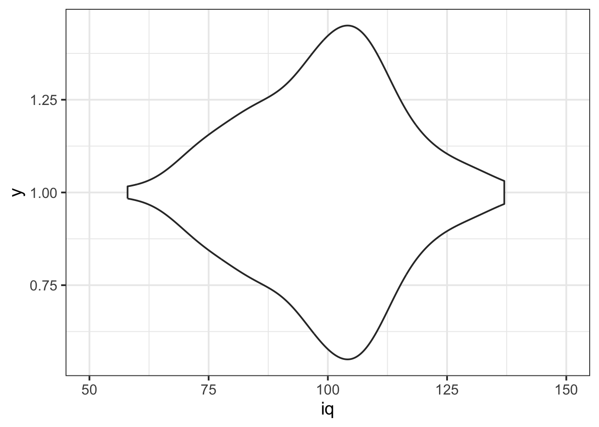
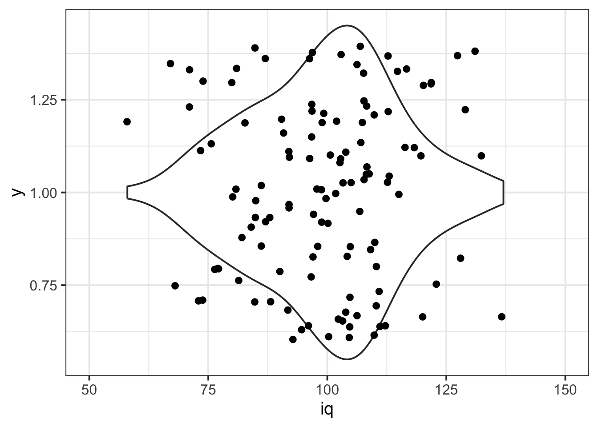
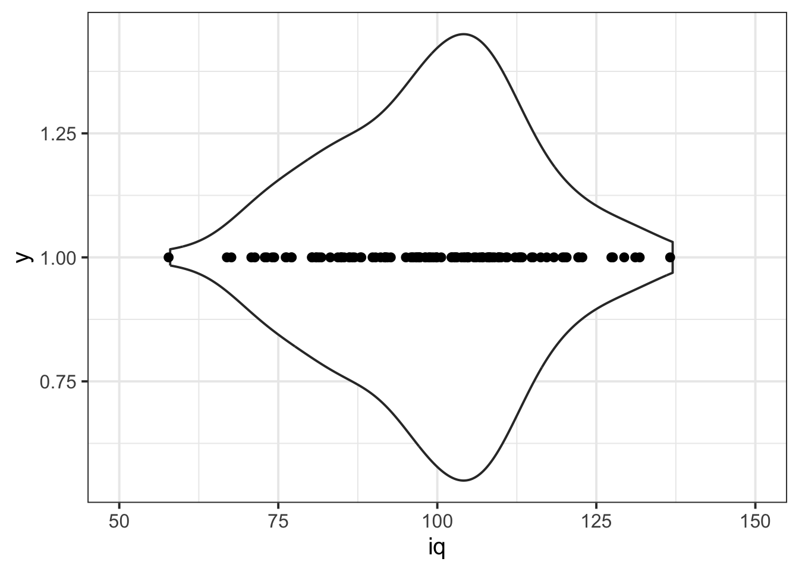
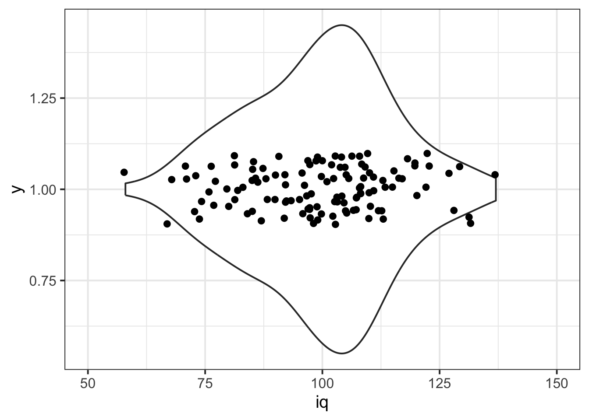

Visualise numeric data
Boxplots
Boxplots provide a useful way of visualising the interquartile range (IQR).
You can see what each part of the boxplot represents below:
We can create a boxplot of our age variable using the following code:
# Notice, we put age on the x axis, making the box plot vertical.
# If we had set aes(y = age) instead, then it would simply be rotated 90 degrees
ggplot(data = wechsler, aes(x = age)) +
geom_boxplot()
However, you should know that a lot of people don’t like boxplots, because by summarising the data only in terms of its IQR, they tend to misrepresent how the data is actually distributed (see, for example, I’ve Stopped Using Box Plots. Should You?).
Histograms
We can visualise numeric data using a histogram, which shows the frequency of values which fall within bins of an equal width.
# make a ggplot with the "wechsler" data.
# on the x axis put the possible values in the "iq" variable,
# add a histogram geom (will add bars representing the count
# in each bin of the variable on the x-axis)
ggplot(data = wechsler, aes(x = iq)) +
geom_histogram()
We can specifiy the width of the bins:
ggplot(data = wechsler, aes(x = iq)) +
geom_histogram(binwidth = 5)
Let’s take a look at the means and standard deviations of participants’ scores on the other tests (the test1 and test2 variables):
wechsler |>
summarise(
mean_test1 = mean(test1),
sd_test1 = sd(test1),
mean_test2 = mean(test2),
sd_test2 = sd(test2)
)# A tibble: 1 × 4
mean_test1 sd_test1 mean_test2 sd_test2
<dbl> <dbl> <dbl> <dbl>
1 49.3 7.15 51.2 14.4Tests 1 and 2 have similar means (around 50), but the standard deviation of Test 2 is almost double that of Test 1. We can see this distinction in the visualisation below - the histograms are centered at around the same point (50), but the one for Test 2 is a lot wider than that for Test 1.

Density curves
In addition to grouping numeric data into bins in order to produce a histogram, we can also visualise a density curve. A density plot is essentially like a smoothed-out histogram. The numbers on the y-axis are not informative—you can just ignore them.
CautionWhat’s “density”?
You can think of the density as a bit similar to the notion of relative frequency, in that for a density curve, the values on the y-axis are scaled so that the total area under the curve is equal to 1. Because there are infinitely many values that numeric variables could take (e.g., 50, 50.1, 50.01, 5.001, …), we could group the data into infinitely many bins. In creating a curve for which the total area underneath is equal to one, we can use the area under the curve in a range of values to indicate the proportion of values in that range.
ggplot(data = wechsler, aes(x = iq)) +
geom_density()+
xlim(50,150)
Violin plots
A violin plot is kind of halfway between a density plot and a boxplot. It takes the smoothed-out histogram shape of the density plot and mirrors it vertically. The result is a violin-like shape, which is why it’s called a “violin plot”.
ggplot(data = wechsler, aes(x = iq, y = 1)) + # y = 1 is not meaningful, but necessary
geom_violin() +
xlim(50,150)
It’s often nice to show the individual data points on top of the violin as well. You can achieve that with geom_jitter(), which plots one point for each observation.
ggplot(data = wechsler, aes(x = iq, y = 1)) + # y = 1 is not meaningful, but necessary
geom_violin() +
geom_jitter() +
xlim(50,150)
Each data point is plotted along the x axis that corresponds to its observed iq value. Its location along the y axis is random and not informative—the reason that the data points are scattered about vertically is so that the overall distribution of data points is easier to see.
CautionChanging the amount of jitter
Here’s what those data points would look like if they weren’t vertically jittered at all: that is, if they were all lined up at the same y value.
ggplot(data = wechsler, aes(x = iq, y = 1)) + # y = 1 is not meaningful, but necessary
geom_violin() +
geom_jitter(height = 0) +
xlim(50,150)
You can play with the height argument of geom_jitter() to find your favourite happy medium.
ggplot(data = wechsler, aes(x = iq, y = 1)) + # y = 1 is not meaningful, but necessary
geom_violin() +
geom_jitter(height = 0.1) +
xlim(50,150)
```
Glossary
- Boxplot: Displays the median and the IQR, and any extreme values.
- Histogram: Shows the frequency of values which fall within bins of an equal width.
- Density curve: A curve for reflecting the distribution of a variable, for which the area under the curve sums to 1.
- Violin plot: A mirrored version of a density curve that resembles a violin; good for combining with jittered points for visualising the actual observed data.
geom_boxplot()To add a boxplot to a ggplot.geom_histogram()To add a histogram to a ggplot.geom_density()To add a density curve to a ggplot.geom_violin()To add a violin to a ggplot.geom_jitter()To add jittered points to a ggplot.